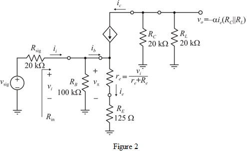

Refer to Figure P6.148 in the text book.
The emitter current  is,
is,
Determine the expression of the collector current,  .
.
Substitute for
for andfor
andfor .
.
Refer to Figure P6.148 in the text book.
The emitter current is,
Determine the expression of the collector current, .
Substitute for andfor.
Draw the small-signal equivalent circuit for the circuit shown in Figure 1.

The trans-conductance of the amplifier is,
The input resistance looking into the base terminal is,
Apply Kirchhoff’s voltage at base to emitter loop to the circuit as shown in Figure 2.
Simplify further.
The input resistance looking into the base terminal is,
The input resistance of the amplifier is,
Thus, the input resistance  of the amplifier is .
of the amplifier is .
 .
. 
Substitute ,,, , , and.
Thus, the voltage gain  of the amplifier is .
of the amplifier is .
The amplitude of the signal  is limited to
is limited to  .
.
We need to determine the largest signal at the input.
By using voltage divider rule we have
The maximum amplitude of the input signal is,
Thus, the maximum amplitude of the input signal is .
of the input signal is .
The voltage gain of the amplifier is,
The maximum peak of the output signal is,
Thus, the maximum peak of the output signal is .